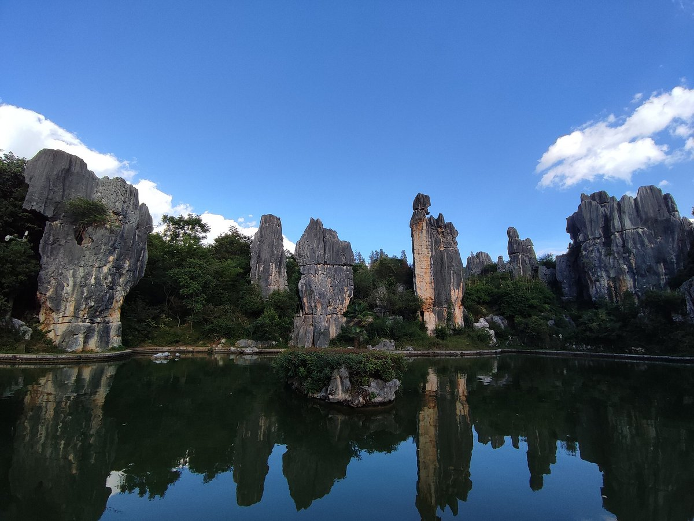
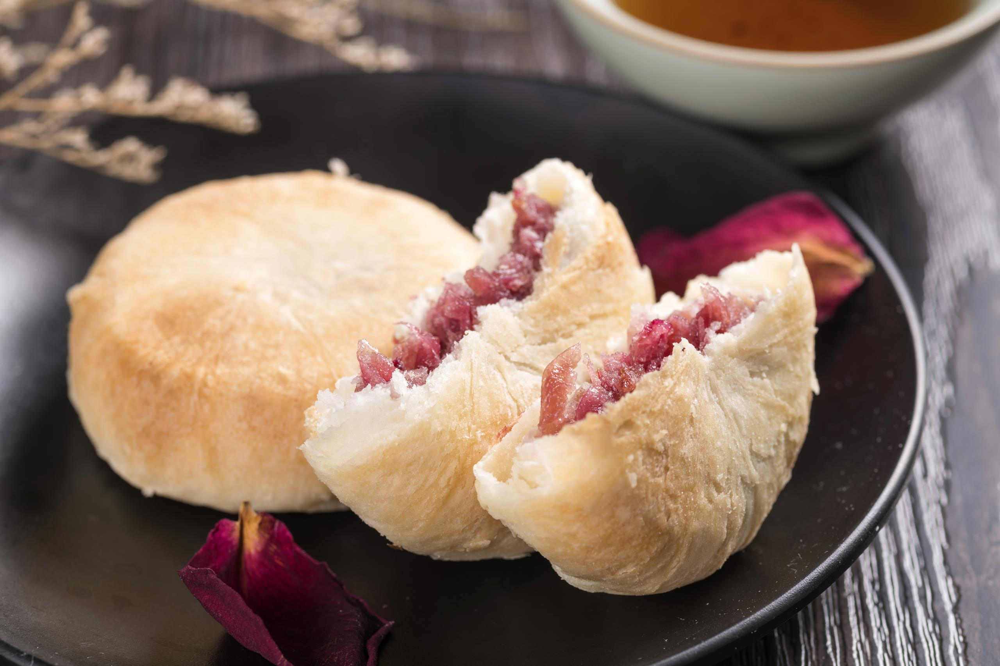

Kunming, the capital of Yunnan Province, lives up to its nickname “the City of Eternal Spring”—with mild temperatures (15°C–25°C year-round), blooming flowers, and lush greenery that makes every season feel like spring. A trip here is a breath of fresh air: wandering flower markets filled with peonies and azaleas, hiking karst peaks with panoramic lake views, and savoring Yunnan’s diverse cuisine—blending Han, Yi, and Dai flavors.

Nature lovers will fall for Dianchi Lake (Yunnan’s largest lake, where seagulls gather in winter), Stone Forest (a surreal landscape of limestone pillars shaped like trees), and Western Hills (where trails wind through pine forests to cliffside pavilions). History buffs can step back in time at Yunnan Military Academy (a 100-year-old institution that trained revolutionary leaders), Golden Temple (China’s largest bronze temple, built in the Ming Dynasty), and Cuihu Park (a historic lake park with old teahouses and cultural relics).
And the food? It’s a celebration of Yunnan’s bounty. Crossing the Bridge Noodles (a hearty soup with fresh ingredients added tableside) is a must-try. Steam Pot Chicken (tender chicken steamed in a ceramic pot, full of herbal aroma) showcases Yunnan’s love for fresh, simple flavors. For a sweet treat, Rose Cake (made with Kunming’s famous roses) is fragrant and delicate. By the end of your trip, you’ll understand why Kunming is called “the gateway to Yunnan’s beauty.”

Tip 1: Winter (November–February): Mild (10°C–20°C), with thousands of red-billed seagulls migrating to Dianchi Lake—perfect for birdwatching and lake walks.
Tip 2: Spring (March–May): Flowering season—peonies at Yuantong Mountain, azaleas at Western Hills, and cherry blossoms at Cuihu Park.
Tip 3: Avoid summer (June–August): Occasional rain (but short-lived); autumn (September–October) is also great (dry and cool, 15°C–22°C).
Tip 1: Getting to Kunming:
Fly to Kunming Changshui International Airport (KMG)—take Metro Line 6 (50 mins, 5 CNY) or a taxi (40 mins, ~120 CNY) to downtown. High-speed trains from Chengdu (4 hours, ~260 CNY) or Guiyang (2 hours, ~150 CNY) are convenient.
Tip 2: Getting Around:
Metro: Lines 1, 2, 3, 6 cover major spots (e.g., Yunnan Military Academy, Cuihu Park); single ride 2–6 CNY.
Buses: Cheap (2 CNY) for reaching parks or markets; use the “Kunming Bus” app for routes.
Taxis/Didi: Taxis start at 8 CNY; Didi is better for trips to Stone Forest (1.5 hours, ~180 CNY) or Western Hills (30 mins, ~50 CNY).
Tip 1: Bring sunscreen and a hat: Kunming’s high altitude (1,900m) means strong UV rays even on cloudy days.
Tip 2: Visit Kunming Flower Market early (8 AM–10 AM): Fresh flowers are cheaper, and you can buy small bouquets for 5–10 CNY.
Tip 3: Try street food at Wenlin Street: The area near Yunnan University has stalls selling rice noodles, roasted potatoes, and rose snacks.